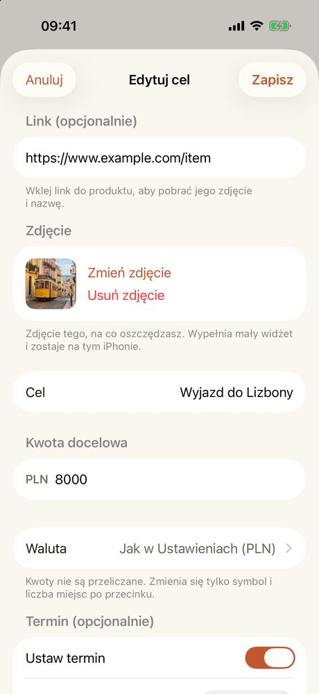
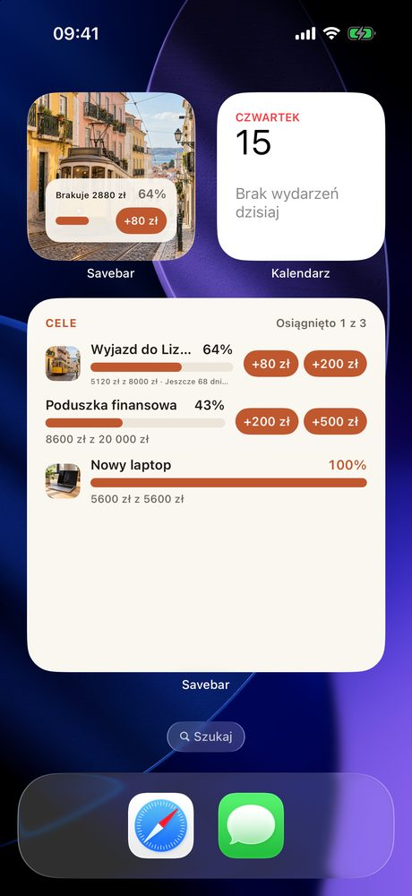

Jak umieścić cel oszczędnościowy na ekranie początkowym iPhone’a
Łatwiej oszczędzać na coś, co masz przed oczami. Widżet umieszcza pasek — ile już odłożono i ile jeszcze brakuje — tam, gdzie patrzysz wiele razy dziennie, i pozwala dodać kwotę jednym stuknięciem.
Oto jak to ustawić w aplikacji Savebar. Jeden cel i mały widżet są za darmo.
1. Utwórz cel
Otwórz Savebar i stuknij +.
Wpisz nazwę i Kwotę docelową.
Opcjonalnie: włącz „Ustaw termin” – dzięki temu zobaczysz, ile dni zostało i ile odkładać dziennie.
Opcjonalnie: wklej link do produktu w polu „Link”. Zdjęcie i nazwa uzupełnią się ze strony.
2. Wybierz kwotę dla przycisku w widżecie
Pole „Kwoty w widżecie”: wpisz tu kwotę, którą zwykle odkładasz. Przycisk w widżecie dodaje ją jednym stuknięciem, bez otwierania aplikacji.

3. Umieść widżet na ekranie początkowym
Dotknij i przytrzymaj puste miejsce na ekranie początkowym, aż aplikacje zaczną się trząść.
Stuknij Edytuj (lub +) w górnym rogu, a następnie wyszukaj „Savebar”.
Wybierz rozmiar Mały i stuknij Dodaj widżet.
Za każdym razem, gdy coś odłożysz, stuknij przycisk kwoty w widżecie. Pasek i procent przesuwają się od razu.

Większy widżet na tym obrazku, z kilkoma celami, jest częścią Savebar Pro.
Chcesz więcej?
Savebar Pro kupujesz jednorazowo, to nie subskrypcja:
Nieograniczona liczba celów
Średnie i duże widżety z kilkoma celami oraz maksymalnie dwoma przyciskami kwot na cel
Widżety ekranu blokady
Aplikacja na Apple Watch z tymi samymi przyciskami kwot
Pytania
Czy aplikacja łączy się z moim bankiem?Nie. Kwoty dodajesz samodzielnie, więc nie ma logowania ani niczego do połączenia.
Ile celów mogę utworzyć za darmo?Jeden, z małym widżetem na ekranie początkowym. Savebar Pro, kupowany jednorazowo, daje nieograniczoną liczbę celów, średnie i duże widżety z kilkoma celami, widżety ekranu blokady i aplikację na Apple Watch.
Czy mogę dodać kwotę, której nie ma na przycisku?Tak. Otwórz cel w aplikacji i stuknij „+ Dodaj”, aby wpisać dowolną kwotę.
Jak wybrać, który cel pokazuje widżet?Dotknij i przytrzymaj widżet, stuknij „Edytuj widżet” i wybierz cel.